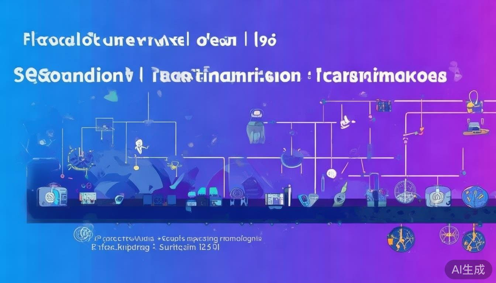

第 2 章 · 深度学习革命：从感知机到Transformer
深度学习不是一夜之间冒出来的。它经历了三次浪潮、两次寒冬，最终在2012年彻底爆发。理解这段历史，才能理解今天的大模型为什么强。
第一次浪潮：感知机（1958）
1958年，康奈尔大学的Frank Rosenblatt发明了感知机（Perceptron）——第一个人工神经网络。它只有一层，能做简单的线性分类。
媒体疯狂了。《纽约时报》报道说：「海军今天展示了一种电子计算机的雏形，它将能走路、说话、看见、写字、自我复制并意识到自己的存在。」
但1969年，Marvin Minsky和Seymour Papert出版了《感知机》一书，证明了单层感知机连最简单的XOR问题都解决不了。第一次AI寒冬来临。
第二次浪潮：反向传播（1986）

1986年，Geoffrey Hinton等人重新发现了反向传播算法，让多层神经网络变得可训练。这一次，神经网络可以学习非线性模式了。
但问题也很明显：训练慢、容易过拟合、需要大量标注数据。到了1990年代末，支持向量机（SVM）等更稳定的方法占据了主流，神经网络再次被冷落。第二次AI寒冬。
第三次浪潮：深度学习爆发（2012）
2012年，Alex Krizhevsky、Ilya Sutskever和Geoffrey Hinton用AlexNet在ImageNet竞赛中以巨大优势夺冠。错误率从26%骤降到15%，震惊了全世界。
三个关键因素同时到位：
- 大数据：ImageNet提供了1400万张标注图片
- GPU算力：NVIDIA的CUDA让神经网络训练加速了100倍
- 算法改进：ReLU激活函数、Dropout正则化等技术
深度学习时代正式开启。
Transformer：一统天下（2017）
2017年，Google的论文《Attention Is All You Need》提出了Transformer架构。它抛弃了传统的循环神经网络（RNN），完全基于注意力机制。
Transformer的优势：
- 并行计算：不像RNN必须逐个处理，Transformer可以并行处理所有位置
- 长距离依赖：注意力机制可以直接关联序列中任意两个位置
- 可扩展性：堆叠更多层、更多参数，性能持续提升
BERT（2018）、GPT（2018）、T5（2019）……所有现代大模型都是Transformer的后代。
Scaling Laws：大力出奇迹
2020年，OpenAI发表论文《Scaling Laws for Neural Language Models》，揭示了一个惊人的规律：
模型性能与参数量、数据量、计算量呈幂律关系。
这意味着：只要你不断堆参数、堆数据、堆算力，模型就会持续变强。这个「暴力美学」的指导思想，直接催生了GPT-3（1750亿参数）、GPT-4（估计万亿参数）、以及今天的万亿级大模型。
本章要点
- 深度学习经历了三次浪潮，两次寒冬，最终靠大数据+GPU+算法突破爆发
- Transformer架构是现代大模型的基石
- Scaling Laws证明「大力出奇迹」是有效的，这解释了大模型的军备竞赛
- 理解历史，才能预判未来
本文由本站 AI 创作整理，内容基于公开知识/官方资料提炼，信息请以官方发布为准； 涉及的历史事件、产品与数据均可在公开渠道查证，本站不编造来源。引用外部内容遵循其原始许可，标注出处即可。